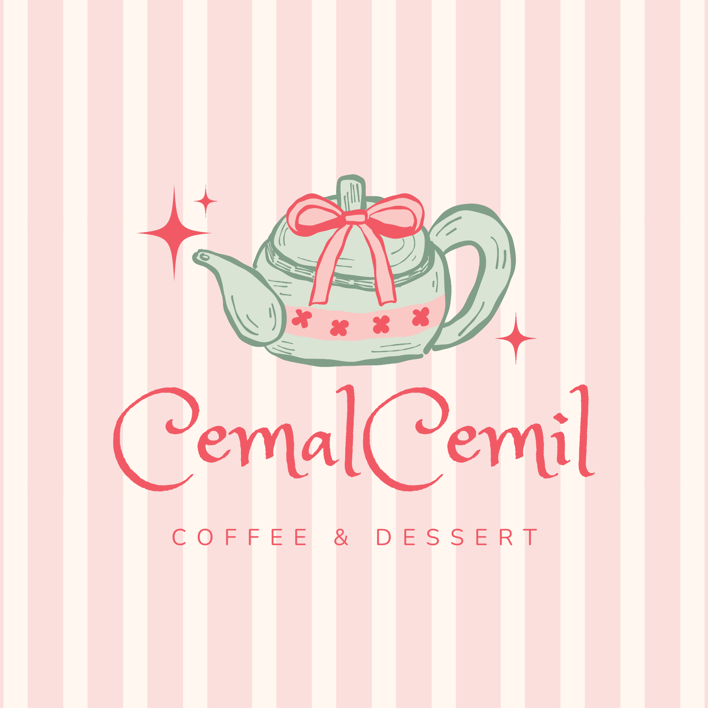
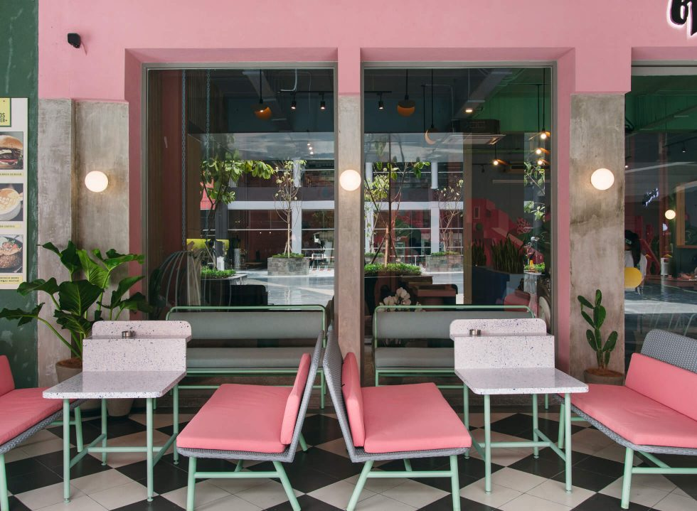
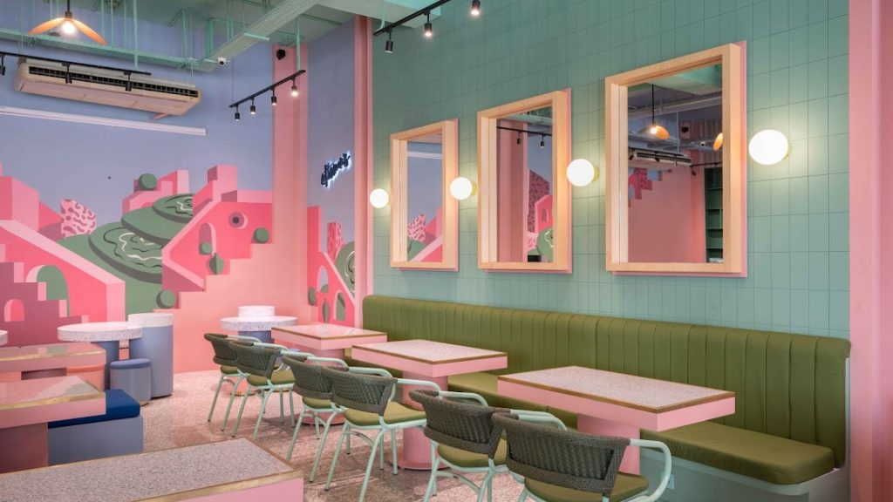
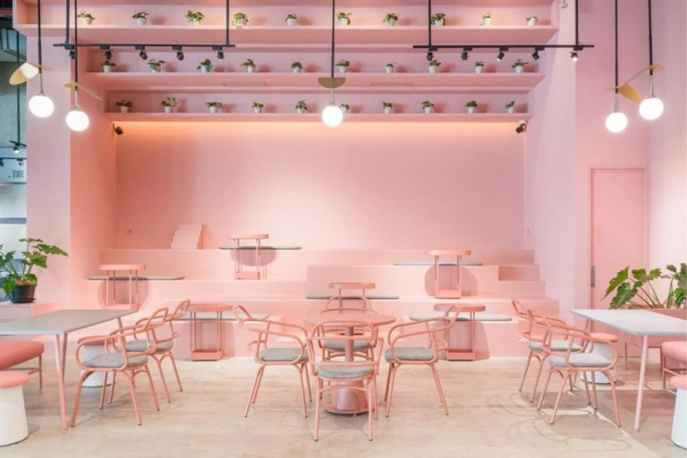

Nikmati perpaduan cita rasa klasik dan sentuhan modern dalam suasana dusty green yang menenangkan di jantung Kota Mataram.
Terinspirasi dari hobi dan imajinasi owner, CemalCemil Coffee menghadirkan konsep "Matcha & Strawberry". Bangunan kami memadukan dinding bata ekspos, elemen kayu jati, dan aksen hijau sage yang menyegarkan, menciptakan ruang di mana setiap tegukan kopi terasa seperti pelukan hangat.
Setiap sudut dirancang untuk kenyamanan dan estetika. Dari teras industrial hingga ruang duduk pastel yang cozy.


